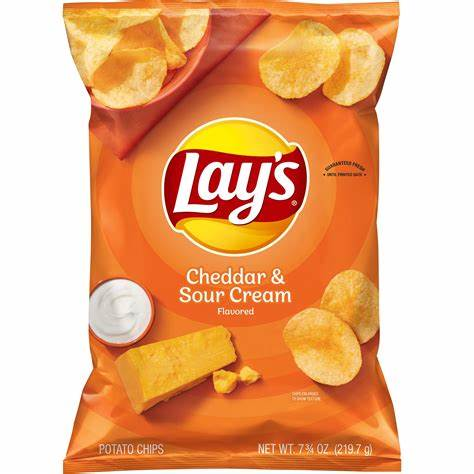

Sour Cream and Onion
Cheddar chips are a scrumptious snack that combines the irresistible crunch of potato chips with the bold and savory taste of cheddar cheese. These chips are coated with a flavorful cheddar cheese seasoning that infuses each bite with a rich and creamy cheese goodness. Whether you savor the classic sharp cheddar flavor or explore variations like white cheddar or jalapeño cheddar, these chips offer a harmonious blend of salty, cheesy, and savory notes that keep you reaching for more. The texture is a crucial element of their appeal, with each chip delivering a satisfying crunch that complements the cheese flavor perfectly. Cheddar chips are a favorite at parties, movie nights, and everyday snacking, providing a delightful and cheesy indulgence that's hard to resist.
